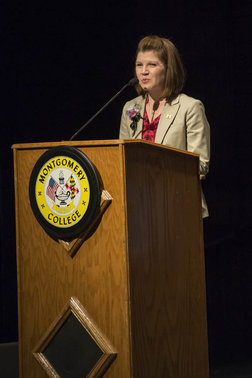

Allison Hutchison
A ninja's work isn't exclusively clandestine. Occasionally, I show off my ninja skills to fellow educators. After all, what good is being a writing teacher ninja if we don't share our techniques, challenges, and successes with one another?
